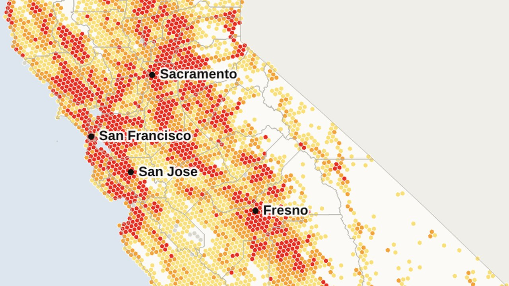
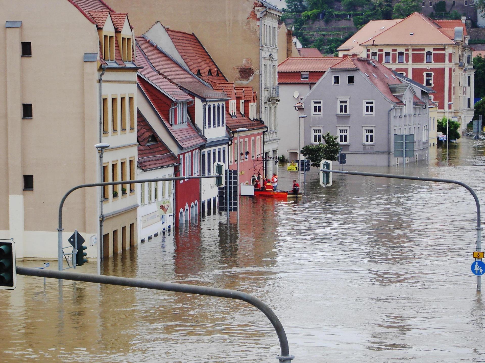
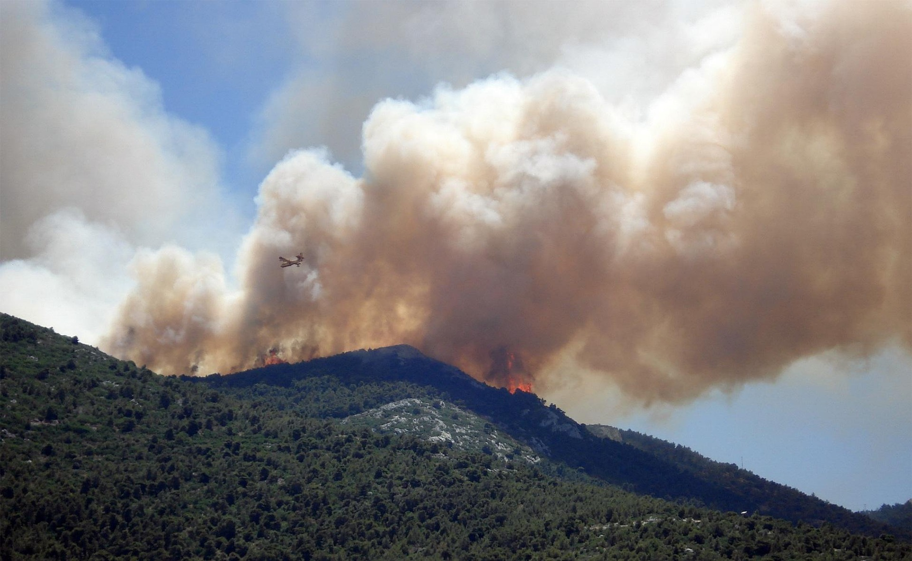
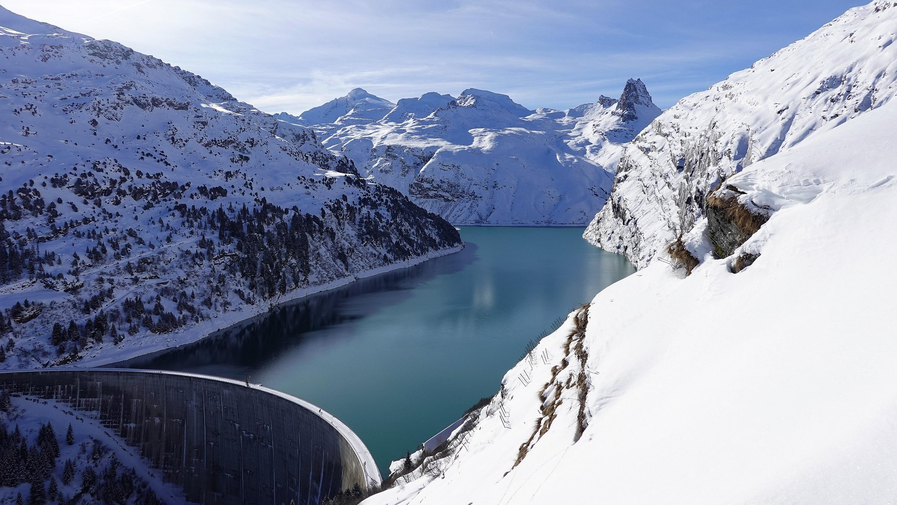
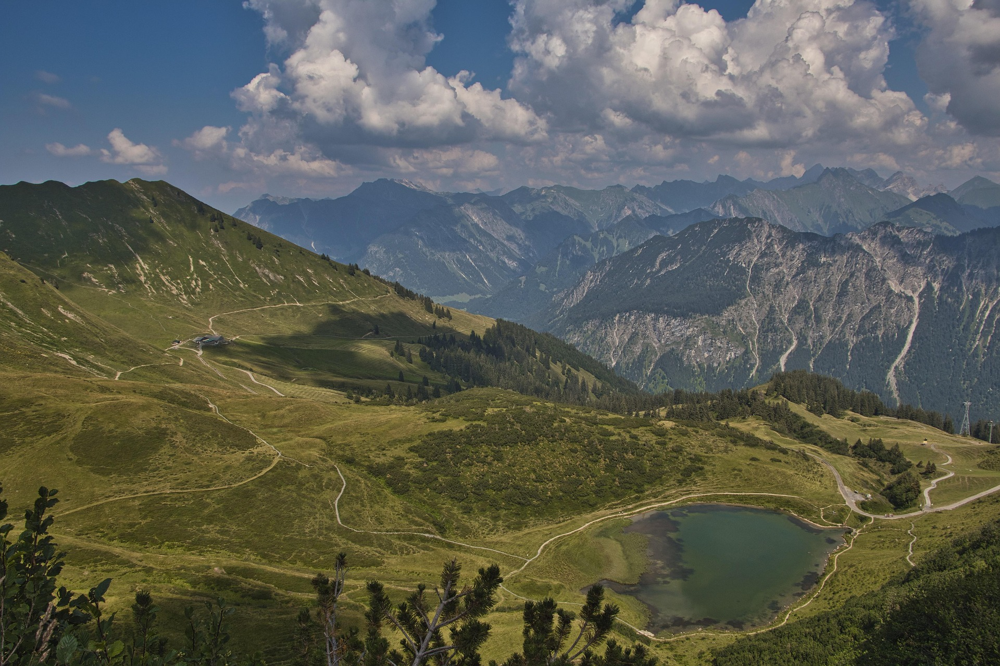

Research data analyst · GIS
Mapping the networks that connect California.
I’m Ayhan Kosan, a research data analyst and geographer working on broadband and utility infrastructure at the California Public Utilities Commission. I turn location data into decisions: who is served, where funding goes, and how networks get built.
- FTTxProject lead for fiber network roll-out in Germany
- FCC FabricAnalysis of statewide availability and broadband serviceable location data
- 89%Accuracy mapping peatlands with machine learning
- Copernicus Land Cover MappingMapped European Union 2018 land cover and land cover changes
What I do
Spatial analysis for infrastructure that has to work.
From fiber trench plans to statewide broadband eligibility, my work sits where geospatial data, regulation and project delivery meet.
-
Broadband & utility networks
Served/unserved analysis, grant eligibility, fiber network design, routing and capacity planning, permitting and construction specifications.
-
Spatial data pipelines
Reproducible Python, DuckDB, SQL and ArcPy workflows that join national datasets to census geographies and run again when the data changes.
-
Remote sensing & earth observation
Sentinel-1/2 SAR and optical analysis in Google Earth Engine for land cover, floods, wildfire and water resources.
-
Program & project management
Scoping, stakeholder alignment, consultant and vendor coordination, tenders and plain-language deliverables for decision-makers.
Current work · CPUC
What I work on
As a research data analyst at the California Public Utilities Commission, I analyze where broadband service exists, where it is missing and where public funding goes.
-
Broadband availability
Served and unserved analysis on the FCC Broadband Serviceable Location Fabric.
-
Grant program data
Spatial data and eligibility for programs such as the Federal Funding Account and Local Agency Technical Assistance.
-
Demographic context
Population, housing and poverty data joined to census geographies and broadband locations.
-
Consultant coordination
Scoping new GIS tasks for Esri and guiding them from brief to delivery.
Independent projects
Remote sensing & web mapping
Open projects with code and live apps: earth observation, hazards and interactive maps.
-

Broadband · Web mapping
California broadband by county
FCC availability data for 10.3 million locations across 58 counties, with five definitions of "served", from BEAD 2025 to fiber only.
-

Hazards · SAR
Flood mapping with Sentinel-1 radar
Mapping the 2019 Yazoo Backwater flood in Mississippi, refined with terrain and a flood severity index.
-

Hazards · Wildfire
Palisades Fire burn severity
Offset-corrected dNBR and RBR burn severity from Sentinel-2, with Sentinel-1 radar change, in an interactive Earth Engine app.
-

Water · Utilities
California water storage from GRACE
Groundwater and reservoir storage change across Central Valley watersheds, 2003–2016.
-

Land cover · ML
Peatland mapping in the European Alps
Random Forest and SVM classification of 965 km² with up to 89% accuracy in Google Earth Engine.
-
Data visualization
US housing price trends, 1940–2000
An interactive choropleth of six decades of median home values by state, with Leaflet and D3.
Experience
From satellite imagery to fiber in the ground.
-
Sep 2025 — Present
Research Data Analyst
California Public Utilities Commission · San Francisco
I analyze broadband availability on the FCC Fabric, prepare spatial data for grant programs, add demographic context and coordinate consultants on GIS work.
-
Jun 2023 — Nov 2024
Network Planner · Project Lead FTTx
MRK Media AG · Munich, Germany
I planned and co-led a fiber-to-the-home roll-out: network capacity design, construction methods, permits, tenders and surveying, with regular communication with residents, the city's mayor and engineering teams.
-
Dec 2022 — May 2023
Technical Project Manager
innoscripta AG · Munich, Germany
I assessed and documented R&D projects for German research tax incentive applications.
-
May 2018 — Apr 2020
Geospatial Analyst · Remote Sensing & Land Monitoring
GAF AG · Munich, Germany
I produced and validated High Resolution Layers for the European Union's Copernicus program, processed Sentinel time series in Python and supported high-resolution mapping projects.
Toolkit
Tools I use every day
GIS & mapping
- ArcGIS Pro
- ArcPy
- ArcGIS Online
- QGIS
- Cartographic design
Data & code
- Python
- pandas
- DuckDB
- SQL
- PostgreSQL / PostGIS
- Jupyter
- JavaScript
Earth observation
- Google Earth Engine
- Sentinel-1 SAR
- Sentinel-2
- GDAL / Rasterio
- scikit-learn
- LiDAR
Infrastructure & delivery
- FCC BDC & Fabric
- Utility network design
- Fiber optic networks
- Permitting & tenders
- Stakeholder engagement
MSc Geography: Global Change – Regional Sustainability
University of Innsbruck, Austria · Thesis: peatland mapping with Sentinel data and machine learning in Google Earth Engine
BEng Cartography & Geomedia Technology
Munich University of Applied Sciences, Germany · Thesis: classifying hop cultivation areas with remote sensing